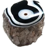

Correspondence Grimoire
Bones

OnyxPetrified WoodBones have long been believed to hold the essence, or very life, of their owner, an idea found in fairy tales, myths, and traditions the world over. The Sámi people of northern Europe held that the bones of a bear, if carefully preserved, would bring the animal back to life so that it would allow itself to be hunted again; bear "burial" sites have been found where the bones were carefully reconstructed and given respectful funerary rites. In a similar practice, the Plains peoples of North America buried the bones of the buffalo with great care so that the animal could return to life.
The bones of small animals were used by shamans in divination. More than two thousand years ago in China, bones were heated and the resulting cracks read as predictions. Elsewhere bones were thrown to the ground in the act of "casting the bones," a phrase still used for other forms of divination such as Runic Alphabet.
One bone in the human body holds particular importance as a sacred symbol, and its name reveals it. In Latin, sacrum means "sacred," and the sacrum is the large, curved, heavy bone at the base of the spine. It was sacred to the Greeks as well, who called it the hieros osteon: hieros means both "sacred" and "temple," and osteon means "bone," so the sacred bone serves as a temple to the other sacred parts of the anatomy, namely the reproductive organs. In ancient Egypt the bone was sacred to Osiris and, as the "seed" bone that protected the semen, was held to be the key to resurrection.
Because of its size, the sacrum is one of the last bones to decay, along with the skull, and this longevity led to its use as a vessel in religious and magickal rites. Because bones are thought to hold the essence of their owner, the bones of saints are treated as holy relics, charged with magickal power and kept locked away in churches. They were believed so holy that devils and demons would keep their distance, and if the bones were dipped in wine or water, the resulting liquid was thought to be infused with mysterious powers, including the ability to cure various ailments.